|
|
Lesson Contents | In this Lesson, you will learn the basics of creating and editing Process Director forms. |
The Form Definition is the Process Director object that identifies all of the properties, fields, events, and conditions that govern the way an Form works. Forms can enable users to input information, present information collected from other sources, control what users participate in the process, and much more. Each Form consists of a number of Process Director controls.
A control is a user interface object, like a button or text box, that enables you to interact with a Form. Controls are central to the operation of the Form, because controls enable users to enter or edit information. Many controls, such as text input fields or check boxes, may already be familiar to you.
In most cases, a process is initiated when a user fills out and submits an Form. The Form Definition is where where you indicate what process is started when the form is submitted. Forms can, at the user’s discretion, become quite complicated, with multiple processes—or even multiple forms—incorporated into various stages of a process. Users can, therefore, design Forms with an extraordinary degree of flexibility, in order to implement complex processes. We won't be doing a very complicated form for this initial training, but you should be aware that forms are one of the primary, powerful tools for implementing complex intelligent automation applications.
To create a new Form definition, use the Create New dropdown in the Content List and choose the Form Definition menu item. A user must have Modify permission to the parent folder to create a Form definition. If a user does not have the appropriate permission, the hotlink will not appear.
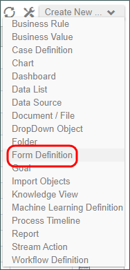
Once you have selected Form Definition from the Menu, the Create Form dialog box will display. Enter the required name for the form and optionally give it a description. Finally, click the OK button to create the Form definition. The Form will automatically open in edit mode to display the Online Form Designer.

Now that we have a new, blank form, we can begin editing it by adding formatting object like tables, form field controls, and other objects. We are not going to edit the form itself yet, however. Instead, we will open and edit an existing form by adding the controls it needs to function.
In the sample application provided with this course, there is a subfolder named Student Exercise Folder. Inside this folder is a form that has already been formatted and styled, but contains no controls. This form is named Change of Major Request - Empty. Open this form by clicking on the link in the Name column of the Content List.
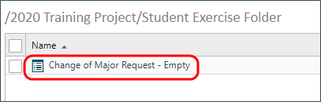
The form will open to show you the Form Definition. On the left side of the Form Definition, there are a number of tabs that display different configuration options. In this case, since we want to edit the form and add the required controls to it, we need to click on the Edit tab of the Form Definition.
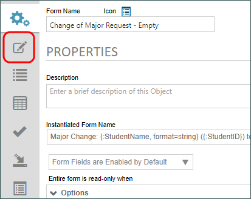
Once you click on the edit tab, the Online Form designer will display, showing our formatted, empty form. We will not discuss the various formatting or accessibility options that you have at your disposal in Process Director right now, though they will be discussed in a later lesson. For now, we will use our pre-formatted form to add the controls we need to make our application work.
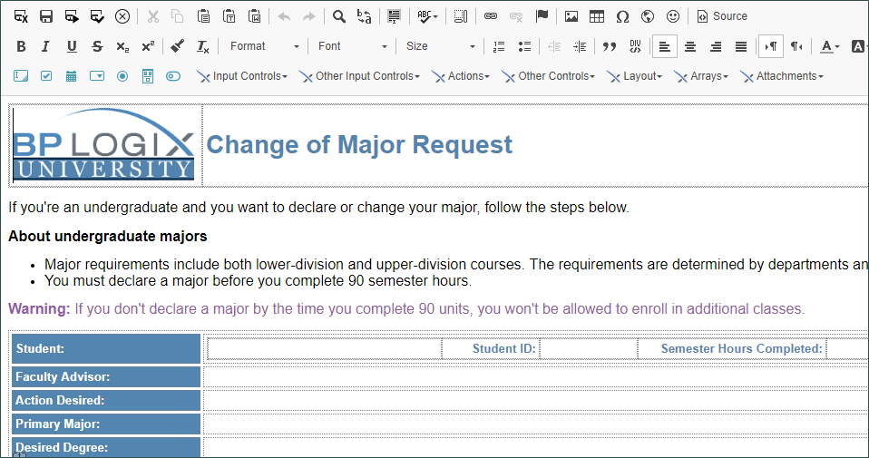
At the top of the Online Form designer, there are a number of toolbars. Most of them will be familiar to you if you've used a word processing application, and they control the various formatting options that are available to you. For now, though, we want to concentrate on the bottom toolbar, which contains all of the process Director controls.
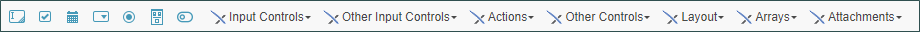
The most commonly-used controls are displayed in the first 7 icons on the toolbar. The remaining controls are located in the dropdown menus on the bar.
To place a control on the page, you first need to move your cursor to the place you'd like the control to appear. For this form, that means you'll need to move your mouse to the table row labeled "Student;" and click in the table cell to the left of the "Student ID:" label.
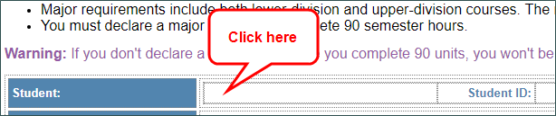
Once the cursor is in the right place, let's add a an Input control in the cell by clicking on the Input icon on the toolbar: . Once you've clicked on the icon, the Properties dialog box for the Input control will appear.
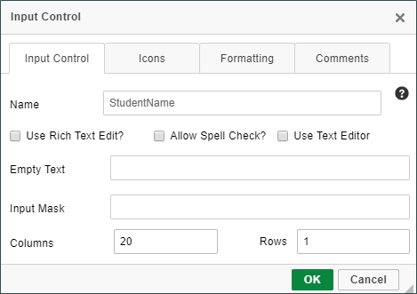
Every control has its own unique properties that can be configured with the dialog box, but all controls share one important property, the Name property.
When you create a control on the Form, Process Director must create a database field to store all of the values that will be stored in that control. This database requirement imposes a a few restrictions on names that are very important to remember. First, all controls on the same form must have unique names. Second, names cannot be more than 64 characters long. Third, and finally, you cannot use any spaces or special characters, other than the underscore (_) or the dash(-) character.
For this control, we will give it the name "StudentName". Once we've done so, we can click the OK button, and our settings will be saved, the Properties dialog box will close, and we can see our control places on the page. If we need to make any property changes, we can re-open the Properties dialog box for the control by double-clicking on the control.
Now we can continue to add controls. We can click on the table cell to the right of the "Student ID:" label, and add another Input control. We'll name this control "StudentID", but now let's change the width of the control by setting the Columns property to "7", to make the control seven characters wide. Next, we'll add a another Input control in the cell next to the "Semester Hours Completed:" label, which we'll name "SemesterHours". We'll also set the Columns property of this control to "3". Now we should have three controls placed on the first row of our table, each of which is appropriately sized.
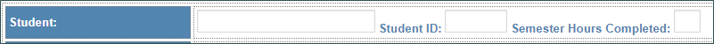
We can now move to the next row of our table. In the cell for the Faculty Advisor's control, let's insert a special control called the User Picker, by selecting it from the menu labeled Input Controls.
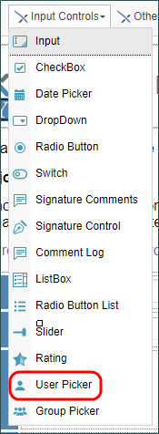
The User Picker control enables you to choose a Process Director user by typing part of the user's name or User ID, and selecting the user that matches what you've typed. Any time you want to select a Process Director user, you should use the User Picker control. There are a number of different properties available in this control, but for now, all we are going to do is set the name as "FacultyAdvisor", and click the OK button to close and save the properties dialog box.
In the next row, which is labeled "Action Desired:", we are going to add a Radio Button List control from the Input Controls menu.
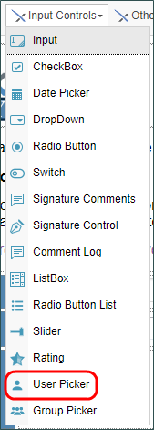
The Radio Button List enables you to display a list of selections, of which, only one can be selected. Whatever value you select will be the value saved for the control. There are a number of ways to specify the values you want to display to the user in this control, but for this example, we are going to manually add the items we want.
To configure this control, we'll first name it "ActionDesired". Then, in the Items property, we will add three lines of text:
NEW PREMAJOR—to declare a new premajor
CHANGE FROM PREMAJOR TO MAJOR—for approval to change from premajor to major
NEW MAJOR—to declare upper division major
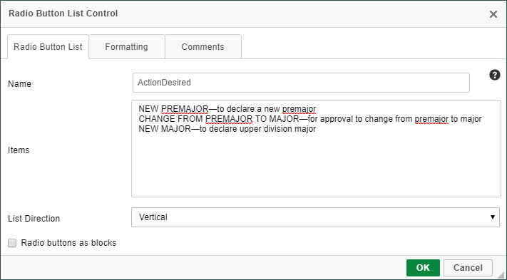
While we won't yet see it in the design view, when the form runs, the three items we've placed in the Items properties will appear as radio buttons on the form.
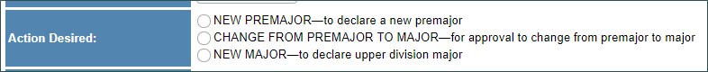
In the row labeled "Primary major:", let's add another input control, named "PrimaryMajor". next to that input box, let's type a space, and add a Checkbox control. The Checkbox control is a true or false control that is usually used to answer a yes or no question. We can add this control by clicking the Checkbox icon on the control toolbar: .
We'll name this control "MajorChangeApproval", and set the Text property as "Change Approval Required".
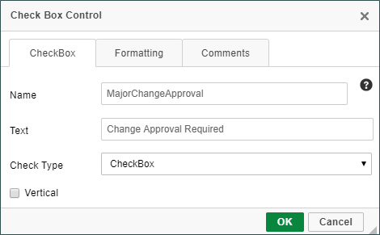
Once we're done, we can click the OK button to save and close the dialog, and place the control on the page.
Our form isn't complete yet, but, for now, let's save the form to ensure we don't lose the changes we've made so far. We can save and close the design view by clicking on the Save and Close Form button on the toolbar: . This will close the Online Form Designer, and return us to the form defintion's properties page.
In this lesson, we've seen how to create a new form, open an existing form, and adding some form controls to the page. Our form, however, is still not finished. In the student exercise for this lesson, you'll need to add the remaining controls we need to make our form fully functional.